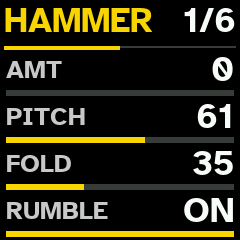
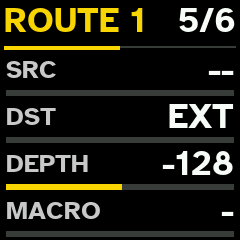
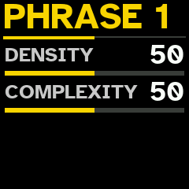
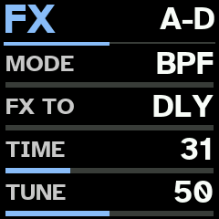
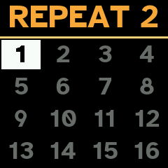

Screens
Quasar on the FM-1's screen, as the firmware draws it. Made for reading at a glance: few words, very large type, high contrast, a colour for each track.

The track view
The track's number on a bar in its colour, with its engine profile (here HAMMER) and, below, the sound's family. The four macros the main knobs turn, as bars; the level, segmented; the pan. Top left, the pattern playing; top right, the octave.
PRESETS changes the profile; HOME draws a new sound; the white keys play the track.

The circuit's page
EDIT shows the sound's six pages: the circuit's own knobs, named for its mode (here HAMMER: AMT, PITCH, FOLD, RUMBLE), then ENV, WRECK, MACRO and two ROUTE pages. 1/6: the first of six. KNOB 1–4 set the rows shown; PRESETS turns to the other four.

WRECK
After every voice: a wavefolder, a ring modulator with its own frequency, sample-rate reduction and (on the other half) bit reduction. All at 0, it is bypassed.

A route
The Pulsar's cables, inside the sound: a source (SHAOS, the LFO, a divider, noise, an FX output, any track's output or envelope), a destination in the circuit, a depth, and the macro that scales it. Four a sound.

The phrase generator
In the step view, the 1st black key draws a new phrase on the track; held, this page sets how dense and how complex it comes out. Complex phrases bring polymeters, other clocks, Euclidean layers and ratchets.

STUTTER
A beat repeat of the whole output: SHIFT and the 6th black key held. Its page, the key held alone: SLICE, RATE, MODE, DECAY, then DRIFT, ROLL and MIX. Set to RND, a row draws a new value at every press.

The FX processor
SEQ turns through the panel's pages: SHAOS, LFO, FX, MIX, then the chosen track's DUCK and AUTO 1–3. FX is the Pulsar's processor: BPF, DBL or PCH, the delay or the hall, TIME, TUNE, FB, the clock that slows it, MAD!.

BREAK
The 3rd black key held breaks the pattern; the way it plays shows in the title (here REPEAT 2). On the PATTERNS grid, a white key held saves the break as a pattern.

PERFORMANCE
The 7th black key: PERF in red while it is on. Change anything; press it again and all of it goes back. The main knobs move that macro on every track with notes.

Sessions
SHIFT + SAVE: the sessions, laid out as the patterns are. A white key loads its session at once; held, it saves the session playing there.

A session's page
SAVE on a slot: LOAD, SAVE, COPY, DELETE, the session's TEMPO and MUTE QT, and CTRL — what PERFORMANCE moves on every track: the macros alone (KNOBS) or everything (ALL).